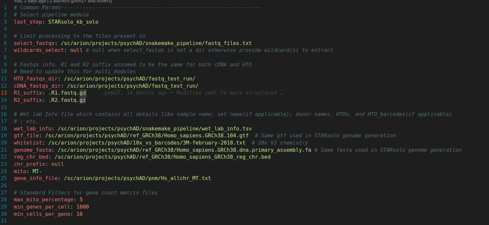
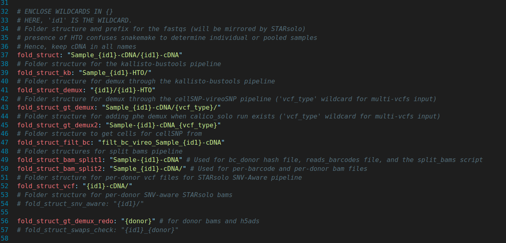
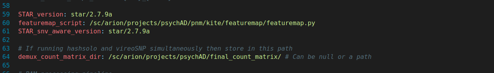

Demultiplex pooled snRNA seq datasets¶
This setup shows one complex workflow that will be simplified and streamlined by this pipeline.
To make it more interesting, this tutorial will annotate individual samples through genotype based demultiplexing (using cellSNP-vireoSNP workflow) as well as HTO based demultiplexing (using kite-hashsolo workflow).
Pipeline overwiew¶
The pipeline can be visualized as:
%%{
init: {
"theme":"neutral",
"themeVariables": {
"fontSize":20,
"primaryColor":"#BB2528",
"primaryTextColor":"#fff",
"primaryBorderColor":"#7C0000",
"lineColor":"#F8B229",
"secondaryColor":"#006100",
"tertiaryColor":"#fff"
},
"flowchart": { "wrap": true, "width": 300 }
}
}%%
flowchart TB
subgraph cDNA
direction TB
id1[/cDNA fastqs/]-->|align|id2(STARsolo)-->|"filter cells"|id3("cellSNP (cellsnp-lite)")
id3-->id6{"all genotypes<br/>available?"}
subgraph PICARD
direction LR
A(CollectGcBiasMetrics)
B(CollectRnaSeqMetrics)
end
end
subgraph genotype-based
id6-->|yes|id8("vireoSNP<br/>without<br/>genotypes")-->|identify<br/>swaps|id9(QTLtools-mbv)
id9-->|"rectify<br/>swaps"|id11(vireoSNP)
subgraph SNPs
direction LR
id4[("External Genotypes <br/>(SNParray or WGS)")]
id5[("1000 Genomes Project")]
style id4 fill:#348ceb,stroke:#333,stroke-width:4px
style id5 fill:#348ceb,stroke:#333,stroke-width:4px
end
end
subgraph demultiplex
direction TB
id12(custom scripts)-->id13[/"final count<br/>matrix"/]
end
subgraph kite
direction TB
id14[/HTO fastqs/]-->id18("run kallisto")
id16("create feature<br/>barcode file")-->|"create mismatch<br/>FASTA<br/> and t2g files"|id17("featuremap<br/>(pachter/kite lab)")
id17-->|mismatch<br/>FASTA|id15("build kallisto index")
id15-->id18
id18-->|"run bustools"|id19("correct, sort<br/>and<br/>count")
id19-->|"hashing<br/>count<br/>matrix"|id20(hashsolo)
end
id2-->|"collect read stats"|PICARD
SNPs-->|"common SNPs"|id3
id4-->id9
id4-->|"correct<br/>donors"|id11
id11-->id12
id2-->|"filter cells"|id20
id20-->id12
id6-->|no|kite
Preparing target files¶
Firstly, we need to create a list of file structure (derived from our fastq files), which will be used by the rule input_processing(add link here) to read in wildcards
Fastq File Structure¶
asdasd
Configuration File¶
To begin with, any utilisation of this pipeline starts with setting up the configuration file new_config.yaml
This yaml config file (new_config.yaml) has all relevant options for each rule present in this pipeline. Furthermore, this file has been sectioned, through comments, into separate sub-workflow modules in a way containing rule-specific options/parameters (ocurring in the order of their appearance in the sub-workflow scripts). Typically, there are certain parameters that need not be changed irrespective of the project the pipeline is being used for
Common (project-specific) parameters¶
The following pictures showcase parameters that are only project-specific.
DAG control and project info params¶

new_config.yaml (Part 1)¶
Folder structures¶

new_config.yaml (Part 2)¶
Extra Info (can be removed soon!)¶

new_config.yaml (Part 3)¶
Module selector¶
last_step: This is the key which needs to be fed one of the pre-selected modules
Project-specific changes to rules¶
Changes to executor script¶
Finally we have to setup the 2 executor scripts:
..Snakefile: